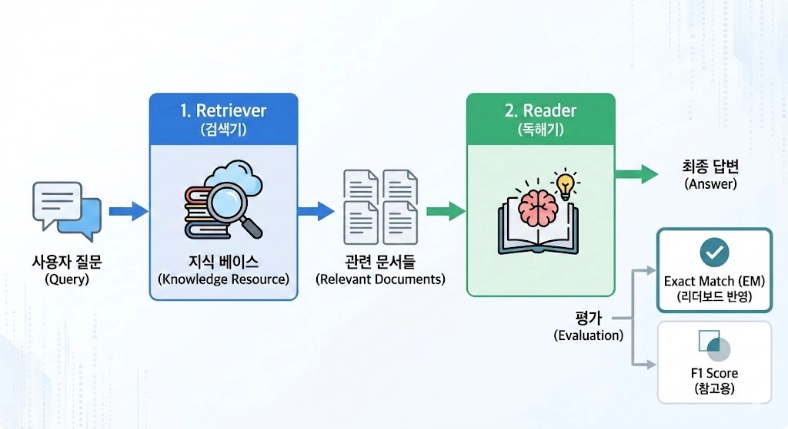
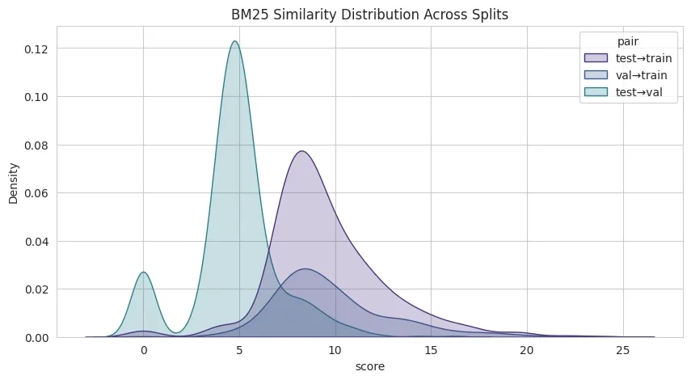
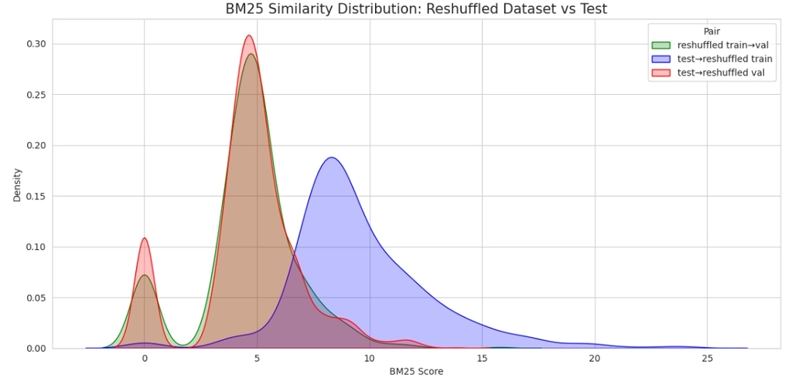
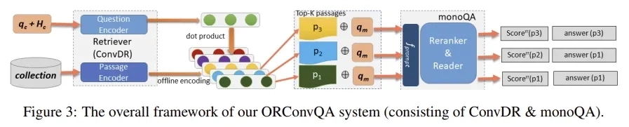

Figure 1. Wikipedia 기반 ODQA 시스템 파이프라인
[프로젝트 요약]
- 목적: Wikipedia 기반 Open-Domain Question Answering(ODQA) 파이프라인 구현 및 정답 예측
- 성과: 최종 1위 달성 (Private EM 74.17%), 상위권 평균 대비 약 3.23%p 높은 성능 기록 및 검증 데이터 재구축을 통해 Val-LB 간 점수 격차 36% 개선
1. 검증 데이터 재구축
초기 실험 시 Validation EM과 리더보드 점수 간의 차이가 커 실험의 신뢰도가 낮은 문제를 해결하기 위해 데이터 분포 기반의 검증 전략을 수립
- 문제 인식: BM25 유사도 분석 결과, 기존 Validation 데이터셋이 Test 데이터셋에 비해 Train 데이터셋과 너무 유사한 분포를 보임 (Train-Val 유사도 9.74 vs Test-Val 유사도 4.80)

Figure 2. 재구축 전 데이터 분포 (Train-Val 유사성 편중)
- → 이는 검증 결과가 리더보드 점수를 대변하지 못하는 결과(Gap 15%p 이상)로 이어짐
- 해결 방안: Test 데이터셋과 유사하게끔 Validation 데이터셋을 재추출하여 분포를 일치시킴

Figure 3. 재구축 후 데이터 분포 (Test 셋과의 분포 일치)
- 결과: Test 데이터셋과의 BM25 유사도 분포를 일치시켜 Validation EM과 리더보드 점수 간의 차이를 15%p에서 9.6%p로 약 5.4%p 개선하며 실험의 신뢰도를 확보
2. SOTA 방법론 monoQA 구현 및 적용
단일 Extraction 모델의 한계를 극복하기 위해, Reranking과 Answer Extraction을 동시에 수행하는 Multi-task Learning 기반의 monoQA를 도입

Figure 4. Reranker와 Reader를 통합한 monoQA 구조
- 문제 인식: 문서 내의 Answer Span으로 답을 찾는 일반적인 Extraction 방식만으로는 제대로 된 문서 내에서도 답을 찾지 못하는 경우 발생
- 해결 방안: KorQuAD 2.0 1위 모델인 EXAONE 구조를 벤치마킹하여 Reranker와 Reader를 통합한 구조인 monoQA 리뷰 및 구현
3. 결과 분석
Generative 모델을 활용하는 monoQA는 불필요한 토큰 추가로 EM(Exact Match)은 낮지만, F1 Score가 높다는 특성 파악
| 모델 이름 |
EM (%) |
F1 (%) |
| monoQA (Qwen3-4B LoRA finetuning) |
65.00 |
69.87 |
| monoQA (T5 finetuning) |
57.50 |
63.56 |
- → 추출형 모델이 놓치는 문맥적 정답을 생성한다는 강점 존재
- 최종 앙상블 전략: 최종 단계에서 0.130의 가중치를 부여한 Casting Vote로 활용하여 앙상블 모델의 다양성과 정밀도 동시 확보